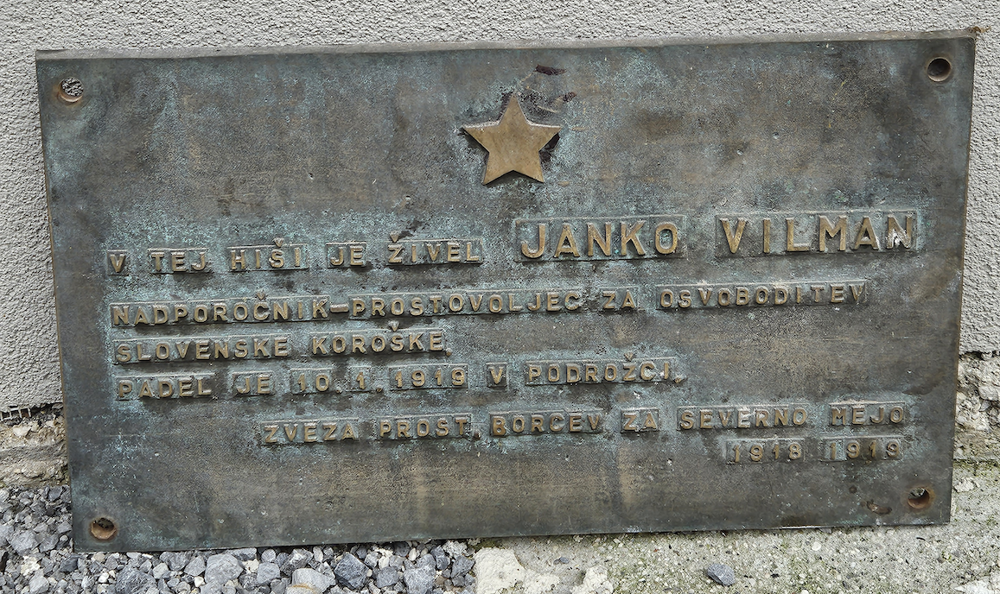

Spominska obeležja med Kranjem in Podkorenom, povezana z bojem za severno mejo
Seznam spominskih obeležij med Kranjem in Podkorenom, povezanih z bojem za severno mejo (pdf)
1 Spominska plošča prostovoljcem borcem za severno mejo iz Kranja in okolice pri vhodu v Prešernovo gledališče v Kranju na Glavnem trgu 6, ki jo je 4. 7. 1976 odkril Občinski odbor ZPBSM 1918-19 Kranj.
2
 Doprsni kip Rudolfa Maistra, delo akademske kiparke Alenke Vidrgar na Maistrovem trgu 5 v Kranju, ki ga je ob prenovi trga 24. 6. 2002 odkrila MO Kranj.
Doprsni kip Rudolfa Maistra, delo akademske kiparke Alenke Vidrgar na Maistrovem trgu 5 v Kranju, ki ga je ob prenovi trga 24. 6. 2002 odkrila MO Kranj.
3 Spominska plošča na rojstni hiši Lojzeta Udeta v Tržiču na Koroški cesti, ki jo je 17. 12. 1999 odkrila Lista brez politike občine Tržič.
4 Spominska plošča na Knjižnici dr. Toneta Pretnarja na Balosu 4 v Tržiču, ki so jo odkrili 29. 11. 1975.
5 Spominska plošča dr Janku Brejcu na njegovi rojstni hiši v Brezjah pri Tržiču 6, ki so mu jo ob 20. obletnici samostojne Slovenije odkrili vaščani.
6 Spominska plošča alpinski četi Rudolfa Badjure na radovljiški graščini na Linhartovem trgu 1 v Radovljici, ki so jo v marcu 1974 odkrili borci za severno mejo 1918-1919.
7 Kip Mihajla Pupina v Zaki na Bledu, ki ga je Sloveniji podarila Srbija, odkrila pa sta ga 9. 10. 2015 predsednika Slovenije in Srbije.
8
 Spominska plošča alpinski, ljubeljski, dobrovoljski Šefmanovi četi, Jeseniškemu in Ljubeljskemu odredu
Spominska plošča alpinski, ljubeljski, dobrovoljski Šefmanovi četi, Jeseniškemu in Ljubeljskemu odredu
na železniški postaji Jesenice, Cesta Maršala Tita 19, Jesenice, ki so jo v novembru 1973 odkrili prostovoljci borci za severno mejo Jesenic 1918-1919.
9  Spominska plošča Karlu Šefmanu na njegovi rojstni hiši v Šefmanovem mlinu v Kranjski Gori, Bezje 16, ki so jo odkrili 4. aprila 1983.
10 Spominska plošča dobrovoljski Šefmanovi četi, Jeseniškemu in Ljubeljskemu odredu na hiši v Podkorenu 20, v kateri so se zbirali prostovoljci borci za severno mejo, ki so jo v novembru 1973 odkrili prostovoljci borci za severno mejo Jesenic 1918-1919.